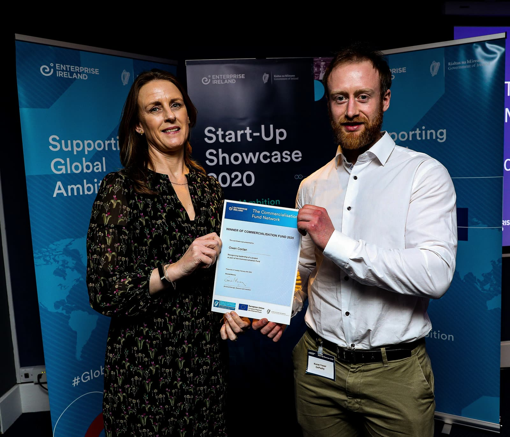
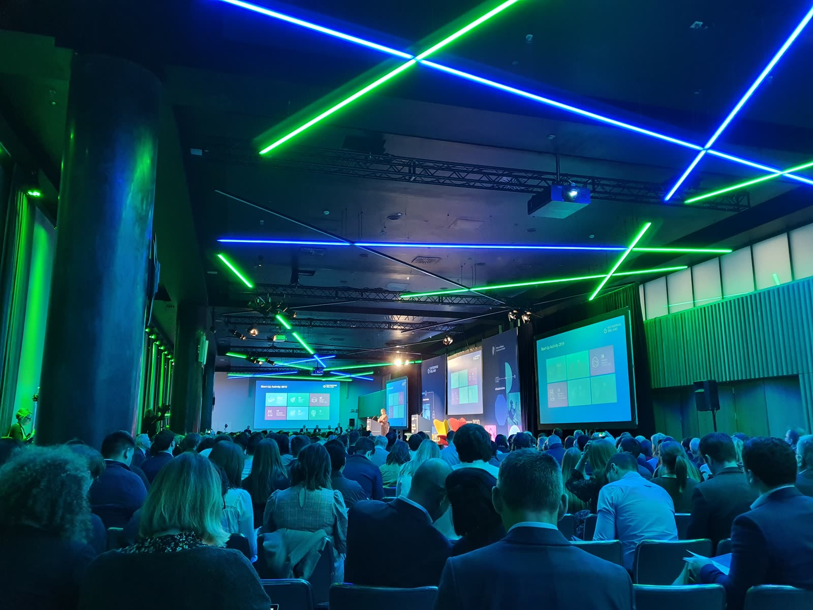
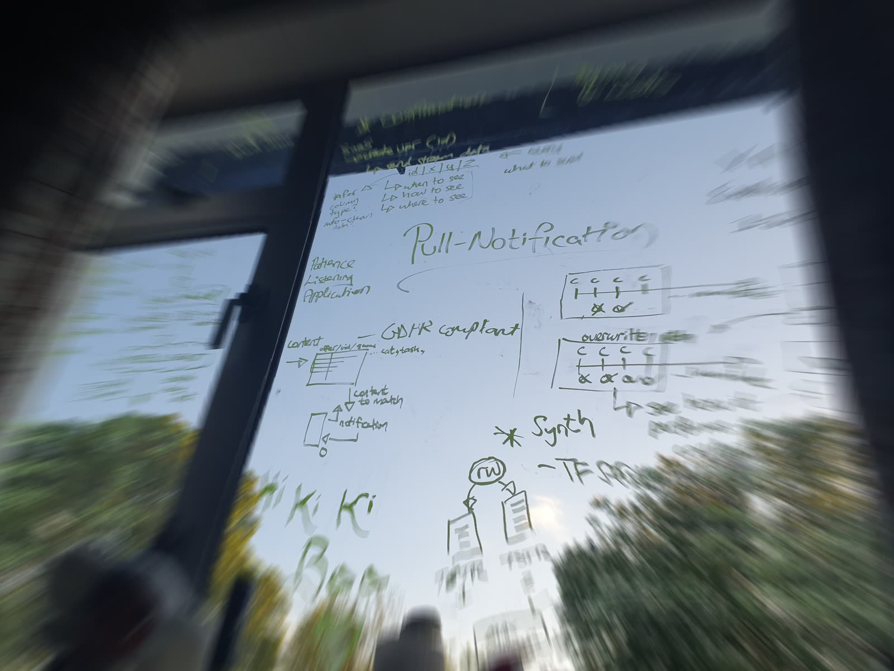

Context
My PhD at Trinity College Dublin's ADAPT Centre was titled ETHOS Push — EmpaTHetic Orchestration of Scrutable Push — and investigated how pushed communications could become more transparent, context-aware and considerate of the people receiving them. Most notification technology is designed around the goals of the sender — increasing clicks, driving engagement, bringing a user back into an app. My work examined the other side of that interaction: what does the notification mean to the recipient? Is it urgent? Is it relevant? Is this an appropriate time and modality? Can the system explain why it interrupted someone?
What we built
EmPushy explored how AI could support context-aware delivery scheduling, notification urgency and relevance modelling, preferred alert-modality recommendations, intelligent notification creation, and subscriber-facing control and transparency — with empathy and digital wellbeing treated as design objectives, not an afterthought.
The project was supported by the Enterprise Ireland Commercialisation Fund. I worked on the move from research toward commercialisation alongside research, engineering, business-development and academic collaborators. That meant learning a genuinely different discipline: working with Trinity's innovation team and Enterprise Ireland, preparing for innovation showcases, developing business and financial models, and engaging potential trial partners.
The problem must be understandable, the data dependable, the system usable, and the value clear to people outside the research community.
The dataset
EmPushy built a real-time push-notification listening and data-collection system. One published experiment used notifications collected over 550 days, subscribing to apps across 37 categories of the Google Play Store — real-time collection, data balancing, sentence embeddings and similarity-based sampling, a shared ontology for notification urgency, and crowdsourced annotation with gold-standard quality controls.
Evidence & recognition
EmPushy was profiled by ADAPT, covered by SiliconRepublic, and selected as an Appen industry case study. I also appeared on Trinity Research & Innovation's TriPod podcast discussing the ADAPT research behind it.



What I learned
Moving from research to a company isn't a linear process of "finishing the technology" and then selling it — product definition, evidence, customer discovery, ownership, financing and technical development continually reshape one another. EmPushy's value is the journey through that, not a claim of large commercial success. The underlying interests — notification data, urgency modelling, real-world scale — are still the through-line into NotiFlow today.